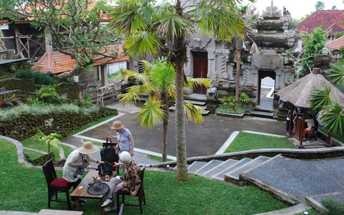

Museum Puri Lukisan Ubud
Tempat wisata Ubud sangat terkenal akan wisata kesenian dan budaya, dan merupakan pusat dari lokasi museum di Bali. Museum seni yang ada di Ubud seperti adalah museum lukisan seperti Arma museum, museum Neka dan museum Puri Lukisan Ubud.
Museum Puri Lukisan Ubud, merupakan museum tertua yang ada di Bali, museum ini lebih mengkhusus akan karya seni lukis Bali traditional dan modern, serta seni ukir dan mengkhusus ke ukiran kayu.
Museum Puri Lukisan Ubud, merupakan museum tertua yang ada di Bali, museum ini lebih mengkhusus akan karya seni lukis Bali traditional dan modern, serta seni ukir dan mengkhusus ke ukiran kayu.

Lokasi Museum Puri Lukisan Ubud
Tentunya anda ingin tahu letak lokasi dari museum Puri Lukisan di Ubud. Lokasinya berada di jalan Raya Ubud. Sangat dekat dengan lokasinya dari puri Ubud dan pasar seni Ubud, jaraknya sekitar 300 meter ke barat. Untuk melihat peta lokasi silakan klik link ini. Lokasi Museum Puri Lukisan Di Ubud.
Museum ini buka dari jam 09:00 - 18:00 (waktu Bali) dan buka setiap hari, kecuali pada hari raya Nyepi. Tiket masuk akan dikenakan sebesar Rp 75.000 per orang dewasa. Harga tiket masuk sudah termasuk minuman yang menyegarkan dan kue. Untuk anak-anak yang berumur di bawah 15 tahun dan ditemani oleh orang tua, tidak akan dikenakan biaya tiket masuk.
Kolesi Seni Museum Puri Lukisan
Karya seni di museum ini diletakkan di empat bangunan berbeda di komplek museum. Untuk dapat melihat semua hasil seni di museum ini, setidaknya anda harus meluangkan waktu kurang lebih 2 jam. Koleksi lukisan mulai dari gaya lukis Batuan, gaya lukis Sanur, gaya lukis Ubud.